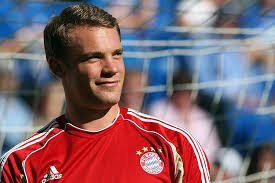
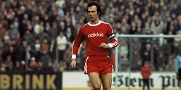
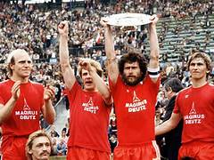
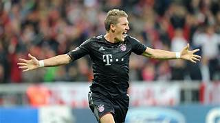
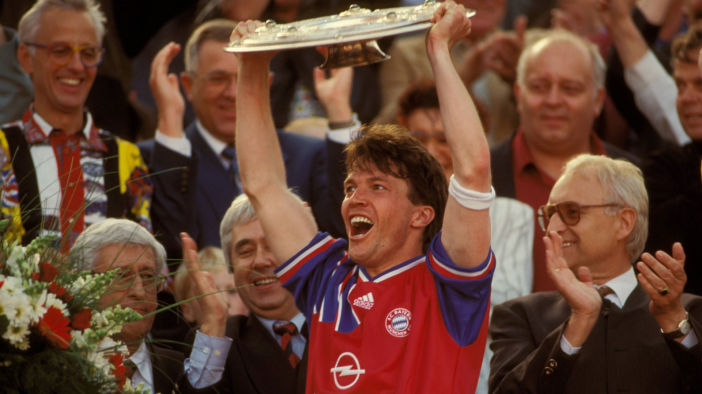
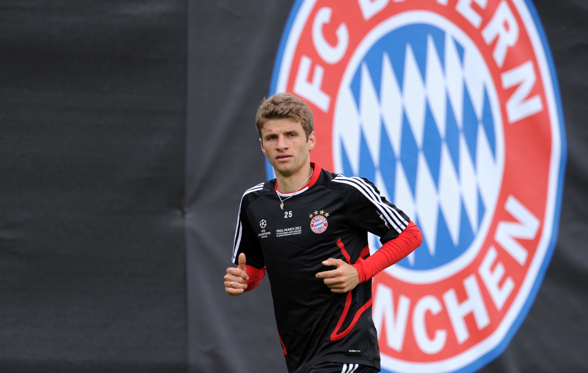
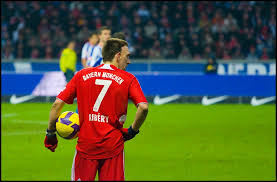

A Escalação de Ouro
Abaixo, os 11 jogadores que definiram a história do Gigante da Baviera por posição.
Abaixo, os 11 jogadores que definiram a história do Gigante da Baviera por posição.

O "Goatkeeper". Indiscutivelmente Melhor goleiro da história, revolucionou o futebol mundial como goleiro-líbero e símbolo de eras vitoriosas.

O "Pequeno Gigante". Inteligência tática pura, especialista em cruzamentos, passes na medida, extrema classe e capitão do Bayern.

O "Kaiser". A maior figura do futebol alemão. O melhor Zagueiro da história. Elegância e liderança na zaga e técnico e decisivo no ataque.

O guarda-costas do Kaiser. Polivalente, corajoso, boa visão de jogo e fundamental defensivamente no tricampeonato europeu dos anos 70.

Multifuncional, vitorioso e polêmico, um dos poucos a marcar em duas finais de Copa do Mundo, um dos maiores laterais da história.

O "Gênio do Futebol" para a torcida bávara. Sinonimo de raça e determinação no meio-campo.

Vencedor da Bola de Ouro. Um motor no meio-campo com visão de jogo e capacidade técnica.

O "Raumdeuter". O maior assistente da história do Bayern e símbolo do "Mia San Mia".

O "Kaiser Franck". Simplesmente o Magico da baviera, driblador, rápido e decisivo.
O homem do gol de Wembley. Sua jogada cortando para o meio tornou-se lendária e imparável.

O "Der Bomber". Recordista de gols, maior artilheiro da história do Bayern de Munique.